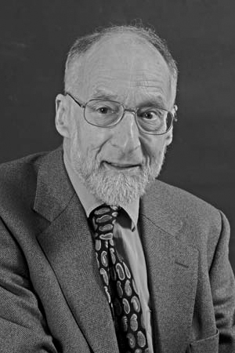

|  |
1991 год Robin Milner (1934-2010) «За три различных полноценных достижения: 1) LCF, автоматизирующий доказательства в логике вычислимых функций Скотта, по-видимому первый, инструмент автоматизированного конструирования доказательств, построенный на теоретическом фундаменте и при этом полезный на практике; 2) ML, первый язык программирования использующий полиморфный вывод типов вместе с типизированным механизмом обработкой ошибок; 3) CCS, общая теория параллельных вычислений. Вдобавок, он сформулировал и развил полную абстракцию, теорию о связи между операционной и денотационной семантиками» |
Страна: Великобритания
Образование: Магистр науки в области математики, Кембриджский университет, 1957
О лауреате
Milner посещал лекции C. Strachey и D. Scott в Оксфорде, которые рассказывали о вычислимых функционалах, денотационной семантике и о логике вычислимых функционалов (LCF) для рассуждения об объектах «обозначения». Позднее он написал свою первую программу для автоматических доказательств теорем. Затем он был приглашён в Стэнфорд где работал над проектом по искусственному интеллекту. Milner был заинтересован в том, как человеческий интеллект может быть «расширен», нежели тем, что искусственный интеллект может достичь самостоятельно. Он считал, что машины могут помочь людям применить подход Scott-Strachey к денотационной семантике к практическим примерам. И он начал работу по внедрению LCF, включавшем средство подцели, которое позволяло пользователю разделить поиск доказательства на поиск меньших подпрограмм, при этом машина следила за тем, как объединить части доказательства. Он также включал мощный механизм упрощения, который позволил машине взять на себя работу по выполнению общих вычислений. Milner был недоволен трудностью использования языков программирования того времени, в связи с чем он разработал новый метаязык (ML) для внедрения нового механизма - Edinburgh LCF. ML опередил своё время. Он был построен на чистых и хорошо сформулированных математических идеях, а также оказал влияние на многие практические языки. Milner написал книгу «Calculus of Communicating Systems», в которой появилась «общая теория параллельности». После публикации CCS Milner узнал о концепции D. Park о «бисимуляции», из-за чего он полностью переработал свою теорию. Сам CCS был изменен несущественно, но вся теория, в частности отношение к наблюдаемой эквивалентности, стала более элегантна и менее произвольна.
Ключевые слова: LCF, ML, CCS, Pi-calculus, Hindley-Milner type inference
Краткая библиография
| 1. |
Gordon, Michael J., Arthur J. R. Milner and Christopher P. Wadsworth, Edinburgh LCF; a Mechanized Logic of Computation, Lecture Notes in Computer Science, Vol. 78, Springer, December 1, 1979. |
| 2. |
Milner, R., A Calculus for Communicating Systems, Lecture Notes in Computer Science, Vol. 92, Springer, 1980. |
| 3. |
Milner, R., Mads Tofte and Robert Harper, Definition of Standard ML, MIT Press, 1990. |